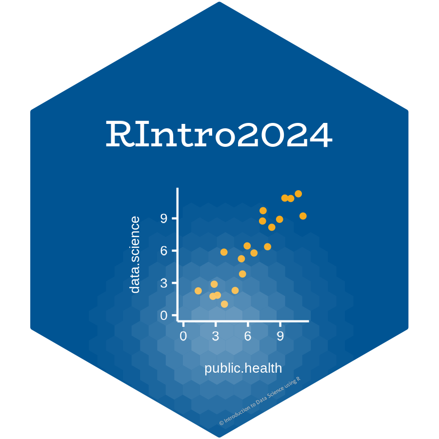

class: center, middle, inverse, title-slide .title[ # Fundamentals of Working with Data ] .subtitle[ ## Day 2: Session 2 <br> RIntro2024 ] .author[ ###  <br> Dr. Arun Mitra ] .institute[ ### AMCHSS, SCTIMST ] --- class: inverse, middle # Outline of the talk - How to import, and export data from R - Based on the `tidyverse` approach - Most optimal workflows for reproducibility and ease of understanding --- class: middle ## Before we get started - Let us recap once again creating a project in R. - It is a best practice to use create a project for each data analysis you are planning to perform. - You can create a New Project using the File menu in RStudio. - Let us create one now! --- ## File paths Reading and writing files often involves the use of file paths. A file path is a string of characters that point R and RStudio to the location of the file on your computer. These file paths can be a complete location - Eg: ** `C:/Users/Arun/XYZ.Rmd` ** Or, just the file name - Eg: ** `XYZ.Rmd` ** If you pass R a partial file path, R will append it to the end of the file path that leads to your working directory --- ## Working Directory <img src="setwd_here.png" width="70%" style="display: block; margin: auto;" /> The working directory is the directory where your `.Rproj` file is present in. `here` package can be very helpful here. (Pun intended!) --- ## `here` is Here! - Install `here`. ```r install.packages("here") ``` - Use it. ```r # library(here) here::here() ``` ``` ## [1] "C:/Users/Arun/Dropbox/PhD/Workshops/AIIMS_Kalyani/materials/NWHDA_Kalyani/sessions/Working_with_Data_Session" ``` ```r here::here( "sub_folder", "file_i_want.csv") ``` ``` ## [1] "C:/Users/Arun/Dropbox/PhD/Workshops/AIIMS_Kalyani/materials/NWHDA_Kalyani/sessions/Working_with_Data_Session/sub_folder/file_i_want.csv" ``` --- ## `here` to the rescue! <img src="here.png" width="60%" style="display: block; margin: auto;" /> --- ## Importing data using the RStudio GUI The RStudio IDE provides an Import Dataset button in the Environment pane, which appears in the top right corner of the IDE by default. You can use this button to import data that is stored in plain text files as well as in Excel, SAS, SPSS, and Stata files. <img src="import1.png" width="80%" style="display: block; margin: auto;" /> --- ## File types in Importing Data There are different packages to import different types of data. * `haven` - SPSS, Stata, or SAS * `readxl` - Excel spreadsheets * `readr` - csv, txt, tsv etc. --- <img src="import_dataset_1.png" width="90%" style="display: block; margin: auto 0 auto auto;" /> --- class: inverse # Exercise 1. Import the provided `csv_data.csv` file into the RStudio environment using the method mentioned above. 2. Can you see anything appearing on the RStudio Console pane once you have imported the file 3. Can you see anything appearing on the RStudio Environment pane once you have imported the file? 4. Import the provided `excel.xls` file into the RStudio environment using the method mentioned above 5. Change the sheet to import as well as skip the first row. See the changes happen in the R code syntax in the bottom right pane of the GUI. --- ## What is an `.rds` file? - `.rds` is a file format native to R for saving compressed content. - `.rds` files are not text files and are not human readable in their raw form. - Each `.rds` file contains a single object, which makes it easy to assign its output directly to a single R object. - This is not necessarily the case for `.RData` files, which makes `.rds` files safer to use. --- ## Saving and Loading a compressed `.rds` file Use the `write_rds()` function from the `readr` package to write an `.rds` file. Save the previously loaded data, as an `.rds` file using this function. You can look at the help menu to know more on the syntax or you can type `?write_rds` in the Console pane. Now you can open your file explorer go to your working directory and check if the file has been saved. Similarly, you can use the `write_csv()` function from the `readr` package to write a `.csv` file. --- class: inverse, middle # Tibbles <img src="tibble.png" width="45%" style="display: block; margin: auto 0 auto auto;" /> --- # A word on Tibble There are a number of differences between tibbles and data.frames. To see a full vignette about tibbles and how they differ from data.frame Please run `vignette("tibble")` in the console and read through that vignette. --- # Tibbles vs Dataframes Some major differences are: - Input type remains unchanged - `data.frame` changes strings as factors; `tibble` will not - Variable names remain unchanged - `data.frame` will remove spaces or add “x” before numeric column names. `tibble` will not. - There are no `row.names()` for a `tibble` - `tibble` print first ten rows and columns that fit on one screen --- # `tibble()` vs `data.frame()` <img src="tibble_1.JPG" width="65%" /> --- # `tibble()` vs `data.frame()` <img src="tibble_vs_dataframe.JPG" width="55%" /> --- # Working with Tibbles You can change `data.frame` objects to a `tibble` using the `as_tibble()` function. Now that you have imported data into RStudio its a good practice to have a look at the data. There are many ways you can do it within RStudio. 1. Through the Environment pane 2. `View()` function 3. Simply typing the name of the dataset in the Console --- # Looking at your data ### Some other things you can do to have a look at your data are: 1. Checking the class of the dataset using `class()` function 2. Checking the structure of the dataset using `str()` function `class()` and `str()` are not just limited to datasets, they can be used for any R objects. --- class: middle ### Some additional tips for quickly looking at your data: - `head()` - `tail()` - `glimpse()` --- class: inverse # Exercise 1. Type the name of the dataset in the console and see what happens? 2. How many rows and columns can you visualize? 3. Now, try the `head()`, `tail()`, and `glimpse()` functions 4. Try to create a tibble manually in RStudio with a numeric, character, and factor variable. Hint: `vignette('tibble')` --- class: middle center # Questions?